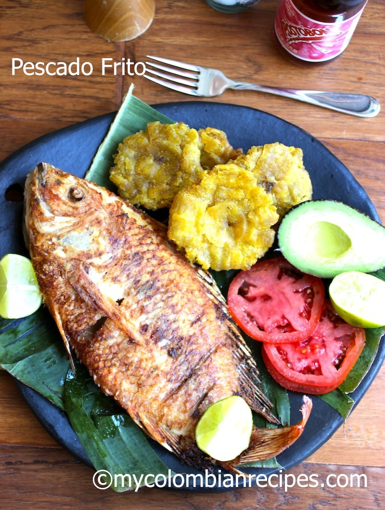
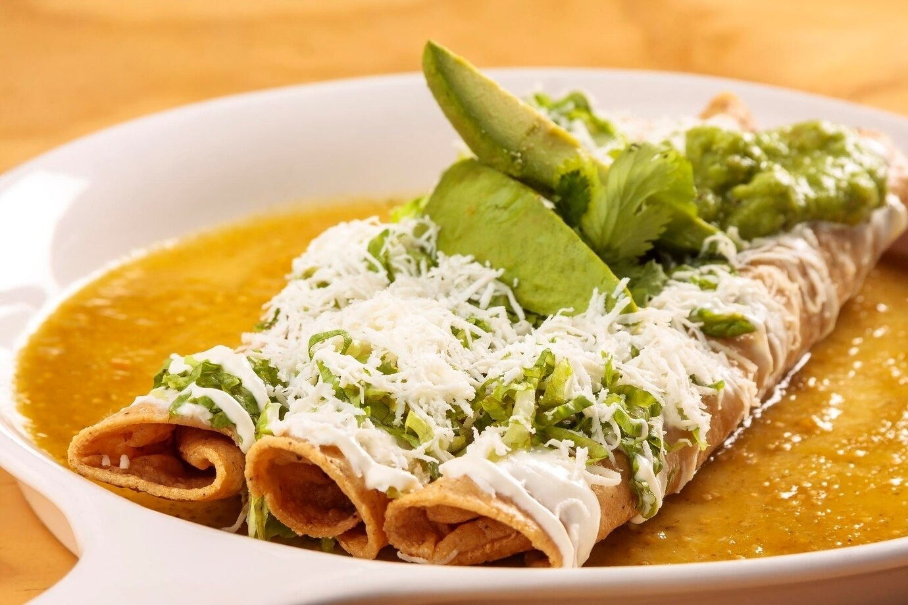
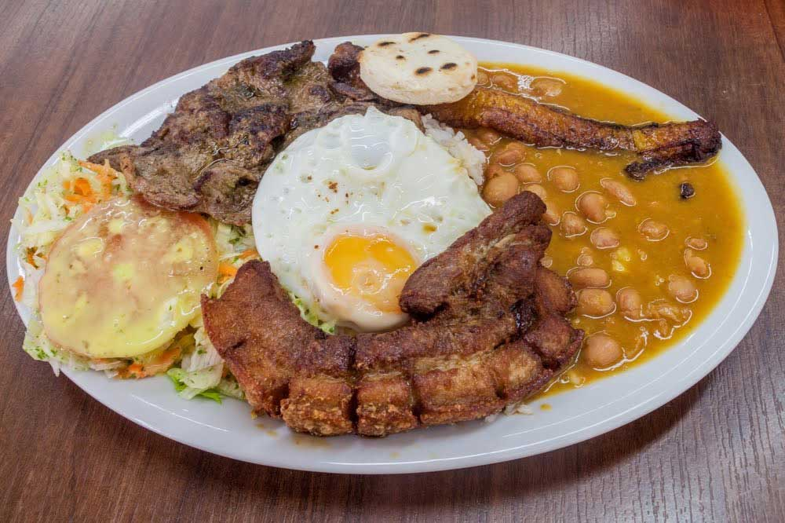
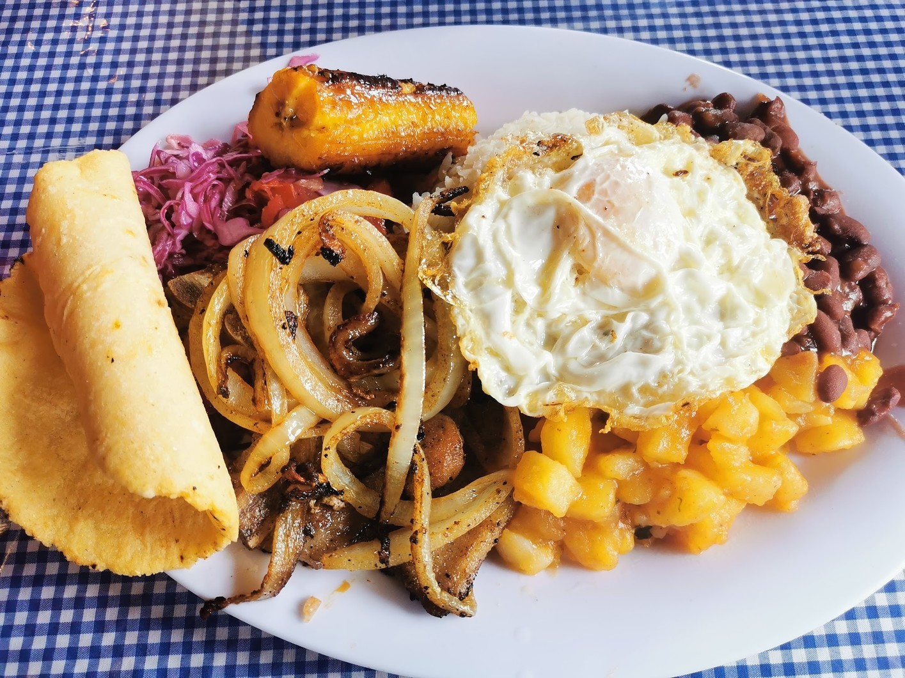

Almuerzos caseros
Ofrecemos almuerzos completos con arroz, proteína, ensalada, acompañamiento y bebida. Cada plato está preparado para que disfrutes el sabor de la comida hecha en casa.

Servido sobre tortillas de maíz calientitas, acompañado de un toque fresco de limón y nuestra cremosa salsa especial de la casa.

Están hechos con tortillas de maíz enrolladas y fritas a la perfección hasta lograr un dorado crujiente e irresistible.

Tradición en la mesa. Nuestra propuesta de comida paisa rinde homenaje a los sabores auténticos de las montañas antioqueñas.

Está compuesta por huevos, frijoles y aros de cebolla que son crujientes e irresistibles.